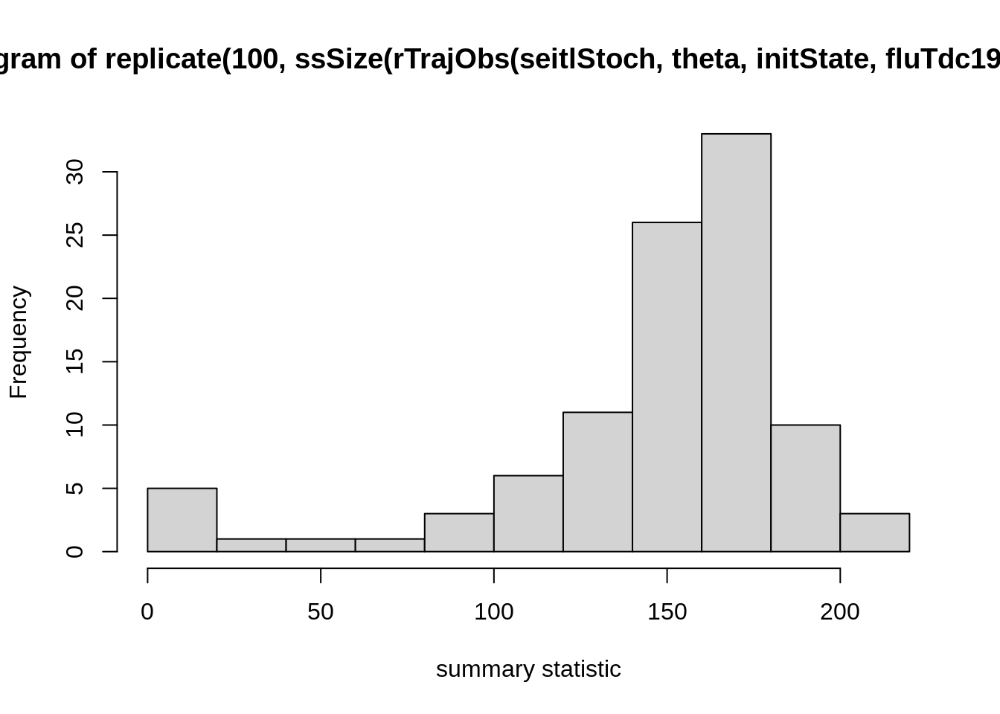
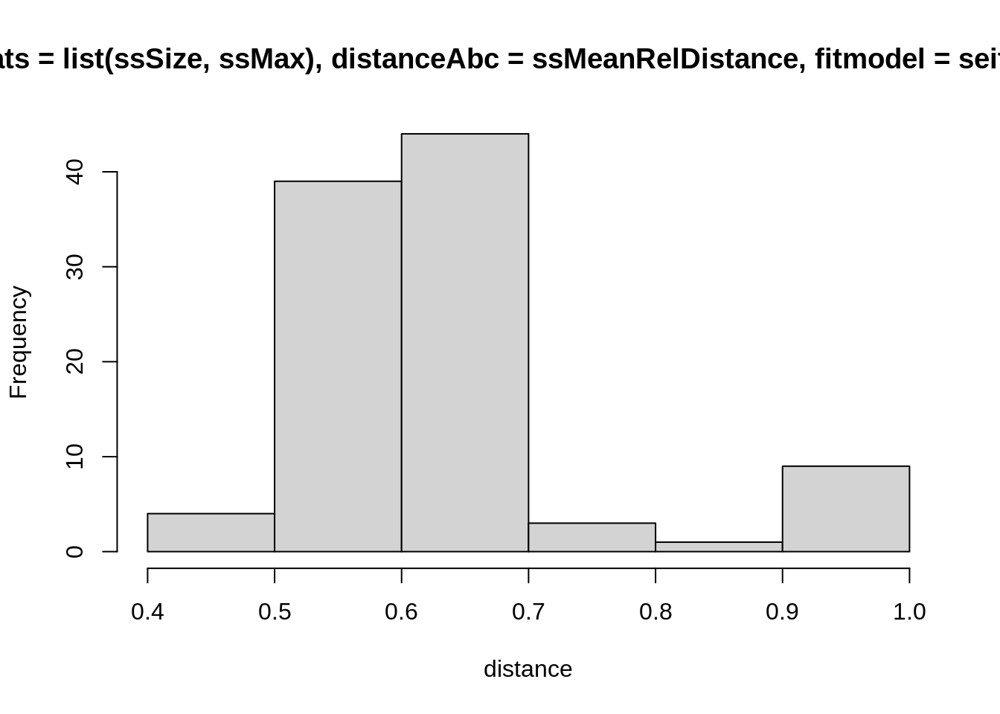

The aim of this practical is to use Approximate Bayesian Computation (ABC) to circumvent the need for a tractable likelihood function when fitting your model. More specifically, you will
To illustrate ABC, you are again going to fit the SEITL model to the Tristan da Cunha epidemics. Although in this case we do have a tractable likelihood function, you may have noticed that it is computationally costly to evaluate with the particle filter for the stochastic SEITL model (i.e., it takes a long time to run), so ABC could be an attractive alternative. Running and evaluating pMCMC and ABC on this same data set also gives us the chance to compare the two approaches.
There are two approximation steps at the core of ABC:
On the other hand, we have seen in a previous session that MCMC provides unbiased samples from the true posterior at little cost for the deterministic SEITL model. You will end this session by fitting this deterministic model with ABC and assess the accuracy of your ABC posterior distribution by comparing it with the true posterior.
As before, you can load the stochastic SEITL model and the Tristan da Cunha data set with
data(models)
data(fluTdc1971)Once again, you can plot the Tristan da Cunha data with
plotTraj(data = fluTdc1971)First of all, you need to define a set of summary statistics for the time series. Have a look at the figure above and think of statistics that would describe the data, and capture the features you want to capture. Finally, code at least two functions that take a trajectory (with an obs column containing the observations) as input and return the values of your summary statistics.
traj <- fluTdc1971
# a function that takes one parameter:
# - traj: a (model or data) trajectory of observations
my_summaryStat1 <- function(traj) {
# calculate summary statistic using the "obs" column in traj
}
# test
ss1.data <- my_summaryStat1(traj)
# write other summary statisticsIf you have trouble coding these up yourself, have a look at some of our examples.
Test how your summary statistics vary with a single set of parameters. You can use the R function replicates, which calls the same function a specified number of times. For example, to call the ssSize function from the examples (which calculates final size) on 100 generated observation trajectories, you can use
theta <- c(R_0 = 2, D_lat = 2, D_inf = 2, alpha = 0.9, D_imm = 13, rho = 0.85)
initState <- c(S = 250, E = 0, I = 4, T = 0, L = 30, Inc = 0)
hist(
replicate(100, ssSize(
rTrajObs(seitlStoch, theta, initState, fluTdc1971$time)
)),
xlab = "summary statistic"
)
These are stochastic simulations so of course your histogram will look different. If you created your own function for summary statistics (e.g., my_summaryStat1), replace ssSize in the plot command with that one and test how it varies over different simulation runs. We suggest that you try a few summary statistics to get a feeling for how they vary across simulations.
The last command is easiest read from the inside out: rTrajObs with the given arguments produces an observation trajectory from the seitlStoch model, ssSize calculates the final size (i.e., total number of people infected) for such a trajectory, replicates does it 100 times and hist plots the outcome (i.e., the replicates of the final size) as a histogram. Depending on the summary statistic you choose, you might see quite a large amount of variation in the outcome of the summary statistic even with a single set of parameters. This might be a problem later when you define an acceptance window: if it is chosen too large, there is a risk that parameter values are accepted indiscriminately. If it is too small, the acceptance will be low and, consequently, many simulation runs wasted because even good parameter sets will often miss the acceptance window.
Do you think your summary statistics are sufficient?
The second step is to compare your data with your simulation using a function that computes the distance between your observed and simulated summary statistics. In the most general case, you will want to write a distance function for each summary statistic. Here, let’s write a single function that calculates the distance between all summary statistics and returns either a single (e.g., mean) distance or a vector of distances.
# a function that takes 5 arguments:
# - sumStats: a list of functions to calculate summary statistics
# - dataObs: the trajectory of observations (data)
# - modelObs: a trajectory of simulated observations (model)
my_distance <- function(sumStats, dataObs, modelObs) {
## start for() loop over all summary stats in the list sumStats
# calculate the distance (e.g., absolute difference, relative
# difference, squared distances etc)
## end for () loop
# combine distances (via sum, mean, or others)
# return an overall distance between the model and data
# trajectories in terms of the summary statistics. E.g., a vector
# of distances or a mean distance
}If you have any trouble writing a function for the distance, have a look at our examples.
Test that your summary distance function returns a sensible value (here, we have assigned the ssMeanRelDistance from the examples to my_distance.
simu <- rTrajObs(seitlStoch, theta, initState, fluTdc1971$time)
ssMeanRelDistance(
sumStats = list(ssSize, ssMax),
dataObs = fluTdc1971,
modelObs = simu
)## [1] 0.4716653Again, you can change ssMeanRelDistance to your own my_distance function or one from the examples, and try different things for the list of summary statistics (including more or less than two summary statistics).
You can then test the distribution of distances of the summary statistics from model runs to the summary statistic on the data, in the same way as we did before with the distribution of summary statistics. You can use computeDistanceAbc function provided in the fitR package does the leg work for you. It computes the distance between a fitmodel and the data for a single simulation using a given parameter vector theta and initial state initState. Have a look at the code of computeDistanceAbc; all it does is generate a simulated observation trajectory and evaluate the distance using a function passed as an argument. We can test it using
computeDistanceAbc(
sumStats = list(ssSize, ssMax),
distanceAbc = ssMeanRelDistance,
fitmodel = seitlStoch,
theta = theta,
initState = initState,
data = fluTdc1971
)## [1] 0.9675055Again, you can change the list of summary statistics (ssSize, ssMax) and the distance function (ssMeanRelDistance) with your own ones, or other ones from the examples.
The returned distance is the outcome of a single simulation run, so you will get a different result here, which will also depend on your choice of distance function and summary statistics.
To plot the distribution of distances from the data for a single set of parameter values theta, you can again use replicate.
hist(
replicate(100, computeDistanceAbc(
sumStats = list(ssSize, ssMax),
distanceAbc = ssMeanRelDistance,
fitmodel = seitlStoch,
theta = theta,
initState = initState,
data = fluTdc1971
)),
xlab = "distance"
)
Again, these are stochastic simulations so your histogram will look different, and again you can test this with different summary statistics (including more, or fewer) and distance functions. How widely are the distances distributed for a single set of parameters? This should give you an indication for a reasonable acceptance window. Ideally, you want to have summary statistics that vary a lot between parameter values (so the acceptance window can distinguish between good or bad fits), but not so much within parameter values (so you don’t have to reject many runs from good parameters). Finding the right combination summary statistics and distance functions to achieve this can be very difficult, though, and one usually ends up having to make compromises between the two.
Lastly, write a function that will return the approximated posterior distribution for theta using the ABC rejection algorithm. We will propose \(D_{lat}\) anf \(D_{inf}\) from informative priors:
We choose the Gamma distribution as our parameters must be positive in value. The mean of the gamma distribution is \(shape/rate\) and the variance is \(shape/rate^2\). Hence here the mean of the distribution is 2 and the variance is 0.25.
For the sake of simplicity and time, we will assume the remaining parameters are fixed at: R_0 = 2, alpha = 0.9, D_imm = 13, rho = 0.85.
# a function that takes 7 arguments:
# - N :the number of desired samples
# - epsilon: a vector (if the distance function returns a vector) or
# single number, the tolerance for ABC
# - sumStats: list of summary statistic functions
# - distanceAbc: ABC distance function
# - fitmodel: model to compare to the data
# - initState: initial state for the simulation
# - data: data to compare the model to
my_abcAlgorithm <- function(N, epsilon, sumStats, distanceAbc,
fitmodel, initState, data) {
# set up empty matrix to store results
# initialise with i = 0
# while the length of the accepted values (result) is less than the desired length (N)
# - draw a new d_lat and d_inf from their prior distributions
# create a theta vector with the new d_lat and d_inf
# use computeDistanceAbc to calculate a distance between the model
# and data
# if the model distance is within the epsilon window
# store the accepeted parameter values
# update i (dimension of results store)
# return the accepted values
}If you have trouble filling any of the empty bits in, have a look at our more guided example.
Once you have coded this function you can perform some tests to calibrate the tolerances.
my_abcAlgorithm(
N = 1000, epsilon = 5,
sumStats = list(ssMax, ssSize),
distanceAbc = ssMeanRelDistance,
fitmodel = seitlStoch,
initState = initState,
data = fluTdc1971
)Again, you can change the list of summary statistics and distance values to some that you have written yourselves, or others from the examples.
You will see that, if your tolerances are too large, you will accept too wide a range of parameter sets. If your tolerances are too small you will have a better approximation of the posterior but very low acceptance rate.
The ABC rejection algorithm can be slow and inefficient. An improvement is to resample populations of parameters with decreasing values of tolerance.
Run your function my_abcAlgorithm with a large tolerance for N = 1000. This is your first population (pop_1). From this population, we will randomly sample parameter sets (rows of the matrix), perturb them by a small value and perform the ABC rejection step with a smalller tolerance.
# use the ABC rejection algorithm to find population 1 in the ABC-SMC algorithm
pop_1 <- my_abcAlgorithm(
N = 1000, epsilon = 10000,
sumStats = list(ssMax, ssSize),
distanceAbc = ssMeanRelDistance,
fitmodel = seitlStoch,
initState = initState,
data = fluTdc1971
)
# set up empty matrix to store results of population 2
# initialise with i=0
# while the length of the accepted values (result) is less than the desired length (N)
# - draw a random number between 1 and 1000
# extract corresponding row from pop_1 using this number
# perturb these parameters using multivariate Gaussian distribution
# create a theta vector with the new d_lat and d_inf
# use computeDistanceAbc to calculate a distance between the model
# and data
# if the model distance is within the epsilon window
# store the accepted parameter values
# update i (dimension of results store)
# return the accepted valuesTry running the ABC rejection algorithm with a small tolerance and compare the computation time to ABC-SMC with two populations.
If you have trouble filling any of the empty bits in, have a look at our solution.
We can add more populations to the ABC-SMC algorithm described above, but then we will need to calculate ‘weights’ for each parameter set. A paper by Toni et al. describes weights for the ABC-SMC algorithm (for deterministic and stochastic models) in detail.
This web site and the material contained in it were originally created in support of an annual short course on Model Fitting and Inference for Infectious Disease Dynamics at the London School of Hygiene & Tropical Medicine. All material is under a MIT license. Please report any issues or suggestions for improvement on the corresponding GitHub issue tracker. We are always keen to hear about any uses of the material here, so please do get in touch using the Discussion board if you have any questions or ideas, or if you find the material here useful or use it in your own teaching.